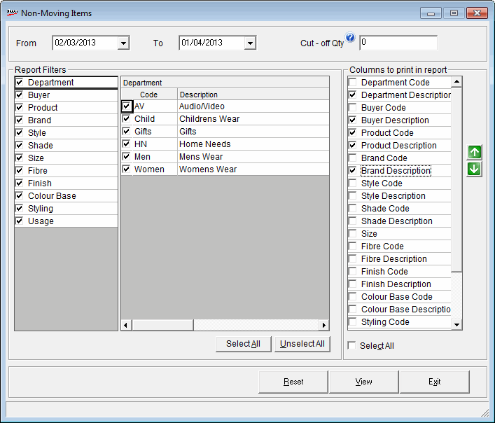

This report displays the details of items that have not been sold/transacted in a selected period.
How to reach: Reports > MIS > Non -Moving Items Report
The Non -Moving Items Report window is displayed.

Date Range: By default, the From and To dates are the current Shoper date. You can enter any date range but the To date cannot be greater than the Shoper date.
Cut-off Qty: Enter the sales quantity for the selected period up to which the items can be considered as non-moving.
The left most list gives all the item classifications enabled in the system parameters. On selection of each classification, the corresponding lookup values catalogued are displayed under Code and Description. You can select/ deselect the values as required.
Select All: To select all the values under the selected item classification.
Unselect All: To unselect all the values under the selected item classification.
Columns To Print in Report
Select the columns to be displayed on the report screen.
The position of the columns can be sorted as per requirement using the
buttons  and
and  .
.
This list shows the Code and Description of all the item classifications listed
Select All: Click to select all the columns.